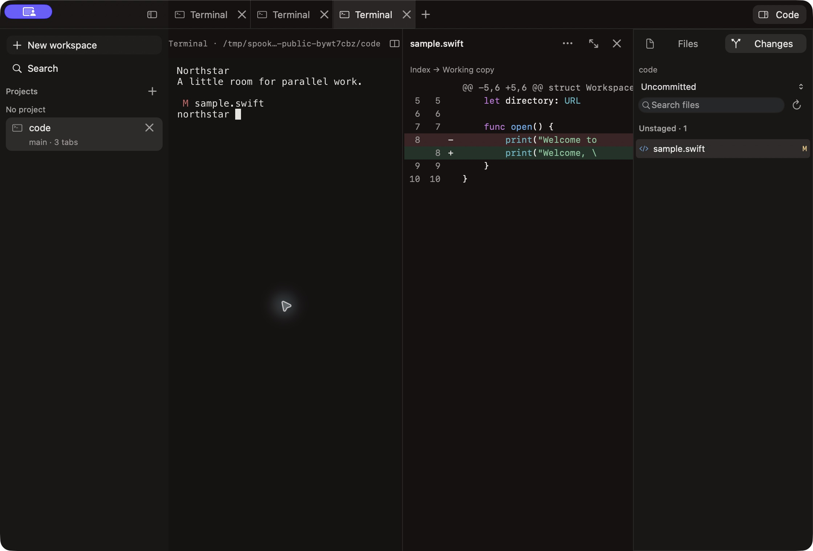

Just open a shell.
No project, prompt, or app account required. Start at Home, then add structure when you need it.
⌘ Nworkspace⌘ Tterminal
Made for the Mac. Open source.
A real terminal at the center. Projects, parallel sessions, worktrees, and diffs around it.
Public Preview is being prepared. No installer is available yet.
Release notesThe terminal stays the terminal
Keep the CLI you know, with its own shortcuts, history, authentication, and permissions.

No project, prompt, or app account required. Start at Home, then add structure when you need it.
Keep sessions together in a workspace. Choose a Git worktree when you want a separate checkout.
Read files and inspect diffs beside your terminal. Keep committing, testing, and shipping through your own tools.
A familiar Mac welcome
Signed, notarized installers are the release target. The first public download appears here after installation and update checks pass.
Your browser saves the installer, usually in Downloads.
Open the disk image and move Spookky to Applications.
Start a shell. Signed releases offer update settings inside the app.
Why this little ghost exists
Ghostty makes the terminal feel at home on the Mac. Working with coding agents added a few things I wanted nearby: projects, parallel sessions, worktrees, and a way to inspect changes.
So I started building Spookky. The terminal remains the center. Native controls, familiar shortcuts, and careful resource use guide the work around it.
Read the project storySpookky is in development. Extended session continuity, hands-on input and accessibility, supported macOS versions, and signed installation have remaining checks. Speed and reliable recovery are requirements, not finished claims.
Current status and release gates